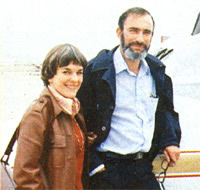

Paul Ehrlich (Bing Professor of Population Studies and Professor of Biological Sciences, Stanford University) and Anne Ehrlich (Senior Research Associate, Department of Biological Sciences, Stanford) are familiar names to ecologists and environmentalists everywhere. As well they should be. Because it was Paul and Anne who-through their writing and research-gave special meaning to the words "population", "resources", and "environment" in the late 1960's. (They also coined the term coevolution, and did a lot to make ecology the household word it is today.) But while most folks are aware of the Ehrlichs' popular writing in the areas of ecology and overpopulation (most of us-for instancehave read Paul's book The Population Bomb) . . . far too few people have any idea of how deeply the Ehrlichs are involved in ecological research (research of the type that tends to be published only in technical journals and college textbooks). That's why it pleases us to be able to present-on a regular basis-the following semi-technical column by authors/ecologists/educators Anne and Paul Ehrlich.
EDITOR'S NOTE: In their last column, Anne and Paul Ehrlich talked about the general design of nuclear power plants and the types of accidents such plants are most likely to experience. Below, the Ehrlichs discuss reactor safety studies and their implications for nuclear power development.
The very first Atomic Energy Commission study of reactor safety-known officially as WASH-740-was completed in 1957. This study estimated the consequences of a hypothetical accident at a small (200-megawatt) nuclear power plant located about 30 miles from a large city. Such an accident-the report's authors concluded-could cause 3,000 to 4,000 immediate deaths from radiation exposure, 50,000 delayed deaths from cancer, and $7 billion in property damage.
In addition, an area 15 times larger than the state of Maryland could be contaminated with fallout, making water supplies unusable and bringing agriculture to a halt. As many as half a million people would have to be evacuated quickly (although finding places for them to go would be difficult, because people elsewhere would fear radioactive contamination borne by the evacuees). Additional millions would have to stay indoors much of the time to avoid unacceptable doses of radiation. And to top it all off, the public would (according to the report's authors) probably insist that all nuclear plants be shut down, thus adding to the disruption caused by the accident.
It was on the basis of WASH-740's rather grim findings that Congress-in 1957was persuaded to pass the now-famous PriceAnderson Act, which limits the liability of the nuclear industry (and its insurers) to $560 million in the event of a real-life accident . . . that is, about 8% of the $7 billion in damages that the authors of WASH-740 said would be likely to result from such an accident. [EDITOR'S NOTE: The constitutionality of the Price-Anderson Act is now being challenged in court. See MOTHER NO. 46, page 122 for further details.]
In 1964, the Atomic Energy Commission decided to re-examine the reactor safety issue. AEC officials-looking ahead to a possible reassessment of the liability limitation contained in the soontoexpire Price-Anderson Act-anticipated that the results of a new safety study based on experience acquired since 1957 would be less pessimistic.
They were, however, wrong: An updated study indicated that the outcome of a nuclear accident could be much worse than predicted in WASH-740. Early fatalities, for instance, might go as high as 45,000 ... more than 10 times the WASH-740 estimate. Property damage also would be correspondingly greater. One participant in the new study wrote that the destruction resulting from a nuclear plant accident could be "more severe than that of a good-sized nuclear weapon".
Confronted with these appalling estimates, the AEC decided to suppress the results of its newest reactor safety study. The report-as a result-was not made public until 1973, when a request under the Freedom of Information Act forced its release. (True to form, the AEC-in a press release-later claimed that it had not announced the results of the investigation earlier because "the 1965 study was never completed" . . . an assertion that has since been shown to be untrue by internal AEC documents.)
The most recent attempt by the nuclear establishment to convince an increasingly skeptical technical community (and general public) of the wholesomeness of nuclear plants got underway in 1972 with the start of WASH1400, known as the Reactor Safety Study (RSS). Throughout the sixties, the AEC had claimed steadfastly that nuclear accidents were "highly unlikely" . . . but when critics had asked "How unlikely?", the AEC was unable to give an answer. To correct this embarrassing situation, AEC officials decided to launch a massive project ( WASH-1400) to prove-once and for all-that reactors are safe.
That the Reactor Safety Study was never intended by AEC higher-ups to be an honest appraisal of nuclear safety was made clear by the scientists that the AEC picked to head up the project. The Commission's first choice-a director of the nuclear industry's lobbying organization-turned the job down. The second choice-one Dr. Norman C. Rasmussen of MIT (the Massachusetts Institute of Technology) -accepted.
Now, interestingly enough, Rasmussen had not contributed to the technical literature of reactor safety . . . nor did he have any special expertise in the technical areas associated with accident probability analyses. Rasmussen did, however, act as a consultant to a number of nuclear firms (including Reddy Communications, a public relations company for nuclear utilities). He also was-at one timeon the board of directors of a lobbying group organized by Westinghouse to promote nuclear power (Americans for Energy Independence). Rasmussen, moreover, had already expressed his opinion of reactor safety in the industry magazine, Nuclear News. (He had asserted that the emergency core cooling systems could do the job and that the risks of a serious accident were "very small" and "insignificant".) Clearly, Rasmussen was exactly the sort of "disinterested scientist" the AEC needed to run its most crucial safety study!
The Nuclear Regulatory Commission (successor to the AEC) released the results of the RSS in October of 1975. The study-now widely known as the "Rasmussen Report"comprised a massive series of volumes accompanied by a brief summary. According to the summary, the study showed the chances of a catastrophic accident happening in a nuclear plant to be smaller than a whole array of risks to which society is already exposed. Furthermore, the report predicted that the consequences of a big melt-down-should one occur-would be much less serious than had previously been thought.
These "results", naturally, were widely broadcast by the nuclear establishment. Careful analysis, however, has since shown the Rasmussen Report's findings to be nothing more than a melange of distortions of the results of competent scientists and engineers, peppered with the work of incompetents. It was a clear case of calculated misrepresentation by NRC officials and industry flacks.
Some of this was evident as soon as the report was released. For instance: No consideration was given in the study to sabotage as a factor contributing to the probability of a nuclear accident . . . although many experts consider this th most likely cause of an "accident". Also it didn't take long to discover that th widely disseminated RSS summary misrepresented the report itself (erring on the optimistic side, of course). A quick review of a preliminary version of the report by the scientific community revealed numerous problems and discrepancies, many of which were either not taken into account in the final report or were dealt with dishonestly.
Two years after its release, the voluminous Reactor Safety Study has now been examined in detail. Probably the most thoroughgoing analysis of the report to date was the one done by an independent scientific organization known as the Union of Concerned Scientists (UCS). The Union-under the direction of MIT physicist Henry Kendall-not only dissected the report itself, but used the Freedom of Information Act to extract from the NRC more than 50,000 pages of internal working papers on the RSS.
Some of the items the UCS turned up in those 50,000-plus pages of material were fascinating. The NRC, for example, had suppressed the report of a group of government nuclear safety experts who had said that "it is difficult to assign a high degree of confidence" to the sort of accident probabilities given in the RSS. The NRC also-it turns out-suppressed the findings of another official review that criticized the assumptions, methodology, and information used in the Rasmussen study. (One reviewer stated that the study's concept of accident probability was "gibberish". Another thought that some of the RSS probability estimates were "suspiciously low".)
The internal documents obtained by the UCS also revealed that although the Rasmussen study was supposed to be "independent" and unbiased, the nuclear industry itself was responsible for important parts of it. This is hardly surprising, however, since the basic plan of the RSS from the outset was to produce a report that would have "significant benefit for the nuclear industry" and would therefore have to "have reasonable acceptance by people in the industry"! So today there is still no way to determine exactly how safe (or unsafe) nuclear power plants are . . . nor is there a way to evaluate with any certainty the potential consequences of a catastrophic accident. What can be said at this point is that the nuclear establishment has repeatedly seen fit to lie to the public and suppress unfavorable evidence in order to keep up the "perfectly safe" facade. This little charade has, however, become increasingly transparent to the general public as a series of real-life nuclear "mishaps" have begun to receive widespread publicity.
The most serious light-water reactor incident to occur thus far took place several years ago at the Tennessee Valley Authority's Browns Ferry Nuclear Power Plant in Decatur, Alabama. In March 1975, a major catastrophe at this plant was avoided-according to TVA engineers-"by sheer luck". Some workers involved in a post-construction modification of the plant had been using a candle flame to detect air leaks at a point where some electrical control cables penetrated a wall. (The cables were essential to the smooth operation of one of the three Browns Ferry reactors.) Incredibly, the flame touched off a major conflagration in which-over a 7-1/2hour periodsome 1,600 electrical cables-more than a third of them related to safety systems-were damaged. The reactor was dangerously out of control for several hours, and chance alone not engineering foresight-prevented a catastrophic release of radiation.
And the Browns Ferry incident (although it was certainly the nearest of the light-waterreactor near misses) is far from unique. The potential for disaster exists-some would say is built into-all currently operating nuclear generating stations. In 1972, a Rand Corporation study underscored this fact when it commented on "the increasing reports of poor quality control and documented carelessness in the manufacture, operation, and maintenance of these complex nuclear machines". (Perhaps the Rand report's authors were influenced by memories of October 5, 1966. On that date, another guaranteed-to-be-safe [by the AEC] nuclear plant-the Enrico Fermi breeder reactorcame within a gnat's eyebrow of turning a substantial portion of Detroit into a ghost town.)
At this point, then, about all that can be said in defense of nuclear power's safety record is that today's handful of atomic generators has not created any disasters so far. No melt-downs have occurred, and no cities have had to be evacuated. It seems to us, however, that this (rather brief) record of human experience with reactors offers little reason to believe that the scores of nuclear plants now on the drawing boards will-when they're commissioned-prove to be good neighbors. Quite the contrary.
What does all this mean to you personally? It means that unless you have a great deal more faith in the assurances of technocrats, bureaucrats, and industrialists than we have, you would not live within 50 miles of a nuclear power station unless you had no other choice. The chances of a catastrophic accident happening may be relatively small . . . but such an accident-if it did occur-could easily result in death for you, your family, and many (if not all) of your friends. At the very least, a serious accident would render your home and/or place of business uninhabitable and force the land on which they stand to be fenced off (or otherwise disposed of) for hundreds of years.
Of course, there are many factors besides the possibility of a catastrophic accident that should shape a person'sor a society'sdecisions about nuclear power. We'll deal with some of those considerations in future columns.
John G. Fuller's We Almost Lost lie Detroit (Reader's Digest Press, New I York, 1975) is a fine popular review of reactor "near misses" and contains much good information on the Fermi breeder incident. (The Ballantine paperback edition of this book costs x'1.95 and can be found in any good bookstore.) The foregoing discussion, of the Rasmussen Report leans heavily on the Union of Concerned Scientists' excellent study, The Risks of Nuclear Power Reactors: A Review of the NRC Reactor Safety Study (WASH-1400, NUREG-75/014). A summary of the UCS report was published by Friends of the Earth in Not Man Apart, j Vol. 8, No. 3 (mid-February 1978), available for 60 cents per copy postpaid from 124 Spear, San Francisco, Calif. 91,105. 22
|
STAFF PHOTO |
 |
|